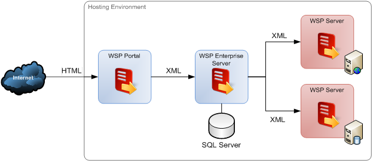
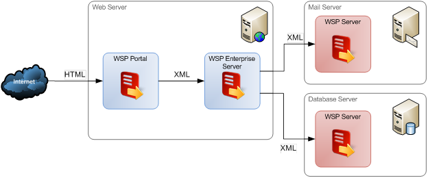

How WebsitePanel Works
Translations:
WebsitePanel is a control panel for Windows hosting that allows to manage web sites, FTP accounts, databases and other hosting resources that could be setup on multiple servers. WebsitePanel also provides white label solution for resellers and self-service control panel for end-users.
WSP Architecture
WebsitePanel is a distributed web-based application. It consists of three components:
- WSP Portal
- WSP Enterprise Server
- WSP Server

All three components are web applications that must be hosted using either IIS version 6 or IIS version 7.
WSP Portal
WSP Portal is the user interface (presentation layer) part of WebsitePanel. It is ASP.NET application that does not contain any business logic. Instead, it communicates with WSP Enterprise Server using SOAP in order to perform various operations. The presentation layer contains all UI elements. User gestures such as button clicks invoke web service methods in the WSP Enterprise Server.
The WSP Portal web application is accessible to external consumers. It works within an IIS application pool that is associated with an account that has limited privileges.
WSP Enterprise Server
WSP Enterprise Server is the primary WSP component that comprises the business logic of the application. WSP Enterprise Server uses a SQL Server database to store its internal data, including user accounts, hosting plans, information about hosted resources, and service settings.
Every operation in WebsitePanel is available as an XML web service that can be accessed from any programming environment, including the .NET Framework, PHP, Java, and Perl. Because of this, WebsitePanel web services can be used for integration by third-party applications.
To manage the hosting environment (such as creating web sites, FTP and mail accounts, databases, etc.), WSP Enterprise Server communicates with WSP Server using XML web services.
WSP Enterprise Server does not expose any UI, just web services. Typically is available only to computers in your hosting environment; the application listens only for internal IP addresses or the internal loopback address 127.0.0.1. WSP Enterprise Server runs in an application pool that is associated with an account that has limited privileges.
WSP Server
WSP Server is web application that performs low-level management operations on the target server(s), such as working with files and folder and their permissions, email, databases, IIS, etc.
WSP Server can be considered a remote server agent and must be installed on every server in the hosting environment that should be managed in the WSP control panel. WSP Server runs in an application pool that has administrative privileges -- that is, its application pool’s identity must be a member of the local Administrators group or of the Domain Admins group if AD must be managed as well.
Common Deployment Scenarios
The following diagrams illustrate typical setups for configuring WebSitePanel.
Standalone Setup

Multi-Server Setup
